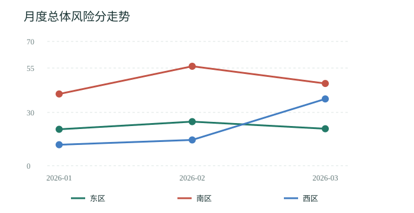

BMO 全域风险导航
虚拟数据演示 · 区域与月份风险热力图
| 区域 | 2026-01 | 2026-02 | 2026-03 |
|---|---|---|---|
| 东区 | 20.5绿 | 24.8绿 | 20.8绿 |
| 南区 | 40.4黄 | 56.0红 | 46.3黄 |
| 西区 | 11.8绿 | 14.5绿 | 37.6黄 |

最新风险画像 · 2026-03
本月最高风险区域为南区，46.3 分。 西区较上月变化 +23.1 分。
| 区域 | 风险分 | 月度变化 | 最高领域 | 建议关注 |
|---|---|---|---|---|
| 南区 | 46.3黄 | -9.7 分 | 管理 | 审批与关键岗位 |
| 西区 | 37.6黄 | +23.1 分 | 销售 | 退货与逾期应收 |
| 东区 | 20.8绿 | -4.0 分 | 销售 | 退货与逾期应收 |